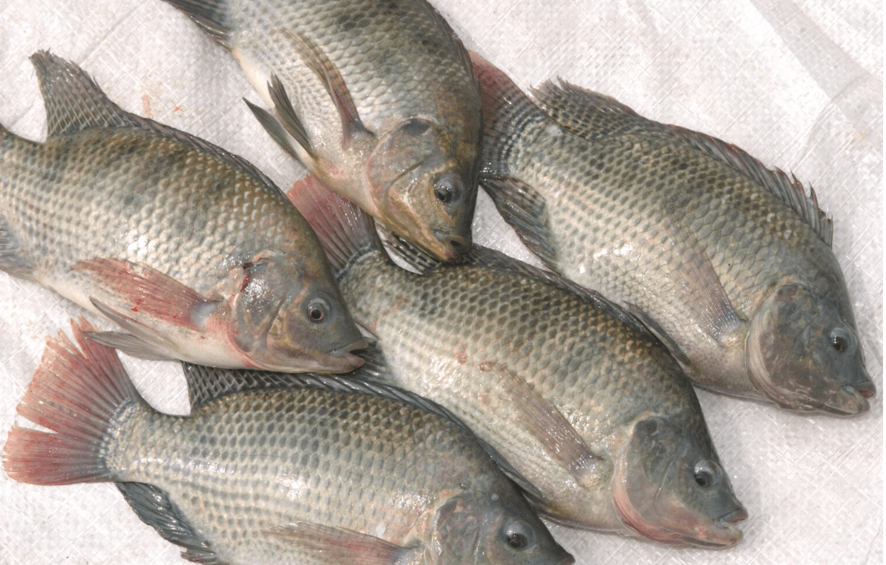
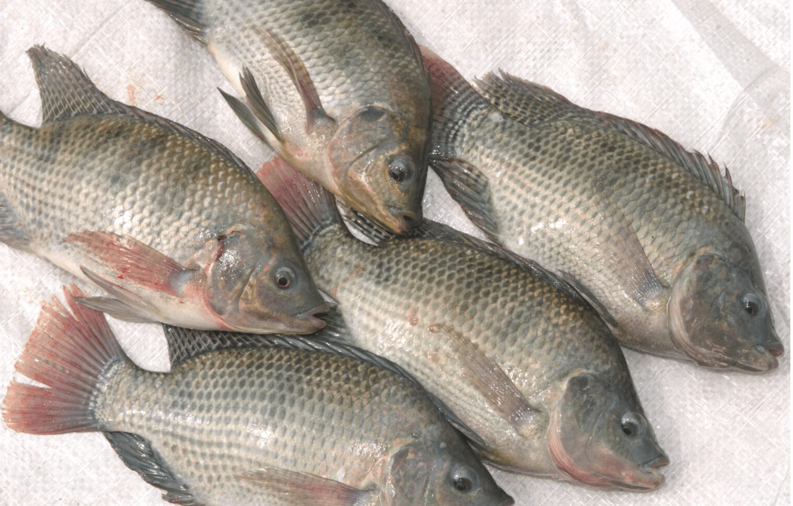
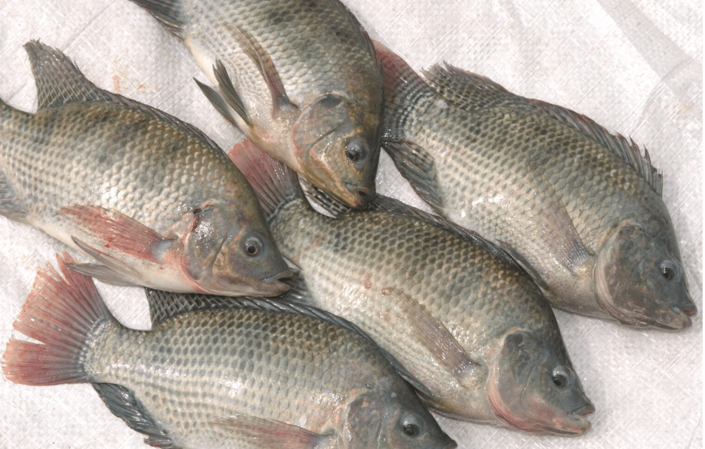
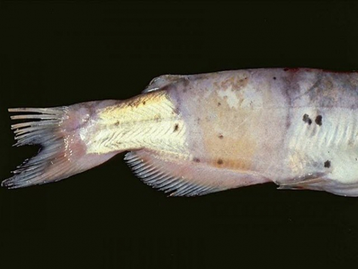
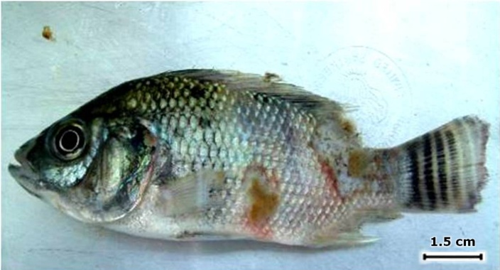

The Temperature range of the Tilapia Fish is in between the 25°C-30°C

| Disease | Image | Medicine to cure | Company of Medicine | pH Range |
|---|---|---|---|---|
| Streptococcosis |  |
Oxytetracycline,Florfenicol,Streptococcus Vaccine,Probiotics Azithrommycin and trimethoprim |
AquaPharma,Elanco,Hipra,Lallemand Animal Nutrition | 7.5 to 8.0 |
| Columnaris Disease |  | Oxytetracycline,Hydrogen Peroxide,Copper Sulfate,Florfenicol | Zoetis,FMC Corporation,Pentair,Aquatic Eco-Systems | 7.5 to 8.0 |
| Aeromonas Septicemia |  |
Oxytetracycline,Enrofloxacin,Formalin, Sulfadimethoxine-Trimethoprim cephalosporins |
Zoetis,Bayer Animal Health,AquaVet | 8.0 to 8.5 |
| Mycobacteriosis |  |
Rifampin,Clarithromycin,Isoniazid,Copper Sulfate | AstraZeneca,Teva Pharmaceuticals,Sandoz,SePRO Corporation | below 6.5 |
| Disease | Image | Medicine to cure | Company of Medicine | pH Range |
|---|---|---|---|---|
| Fungal infections |  | Formalin,Copper Sulfate,Potassium Permanganate,Methylene Blue | Syndel,SePRO Corporation,Aquatic Eco-Systems,Kordon | below 6.5 or above 8.5 |
| Gill Necrosis |  |
Oxytetracycline,Enrofloxacin,Potassium Permanganate,Praziquantel | Zoetis,Norbrook Laboratories,Jubilant Life Sciences,Aqua Health | below 6.5 |
| Cold Water Shock |  |
Salt Baths,Florfenicol,Potassium Permanganate,Formalin | Aquatic Eco-Systems,Merck Animal Health,Jubilant Life Sciences | 7.5 to 8.0 |
© 2023 Aquaculture Temperature Diseases
Follow our website on chrome